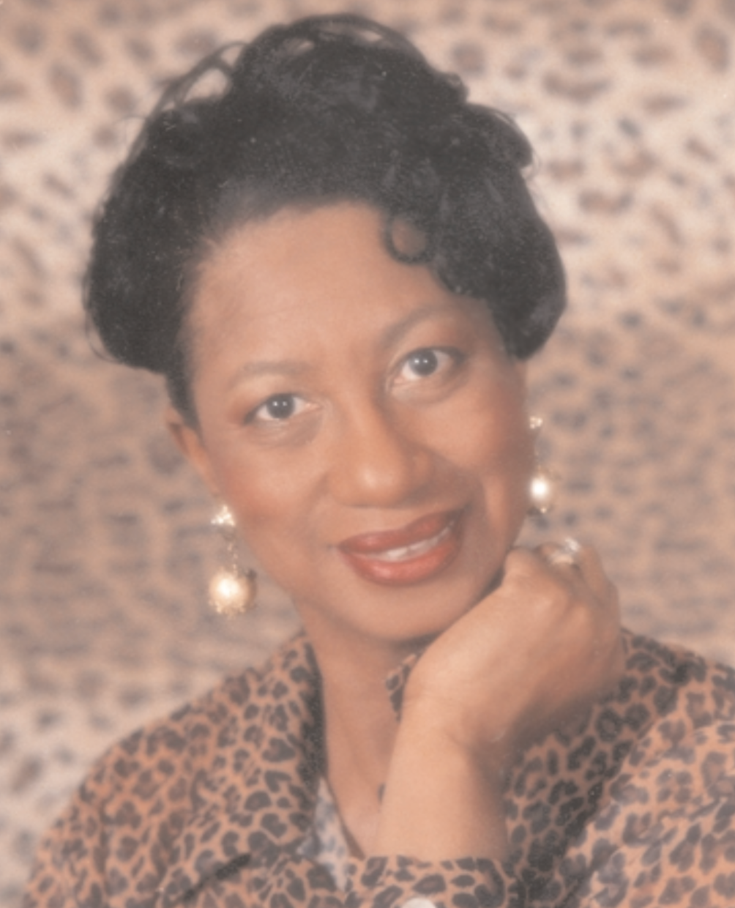

Yo! is an acronym for the Youth Opportunities Movement. This program is funded by the United States Department of Labor. The Local youth opportunity movement - Yo! Memphis - is a collaborative venture between the city of Memphis and grassroots citizens, business, clergy, educators, government officials and public and non-profit agencies that are dedicated to helping youth develop into productive and contributing members of the community. The vision of Yo! Memphis is that all youth, particularly, those who are out of school, acquire the necessary skills and work experience to successfully transition into adulthood, areers, further education and training.
Workforce development specialist will identify, recruit and enroll elligible youth and offer alternatives to dropping out of school, opportunities to receive acacdemic tutorial services, job readiness training and links to vocational training.
The mission of Yo! Memphis is to identify and provide the necessary resources to effectively serve economically disadvantaged youth living in the Enterprise Community. Any youth between the ages 14 through 21 who live in the enterprise community are eligible for Membership in Yo! Memphis. The goal of Yo! Memphis is to help youth to stay in school and graduate, earn a GED, learn job skills, attend college, trade school, and or technical school and earn long term employment!
IN TODAY'S WORLD reading is one of the most fundamental capacities that an individual can develop. For some, reading can open up bold new worlds and unlock many untold mysteries. For others reading can end the dilemma of paradox and ambiguity. For everyone, learning to read is essential. This workbook had been designed so that anyone, regardless of age, can learn how to read.
THE INSTRUCTIONAL part of this workbook is to be used as an aid to the person who will explain its contents to the student. The person that is READING the information in this workbook is to be the facilitator. The person LEARNING to “read” and use the materials in this workbook is the learner. The exercises are designed to help the learner learn how to learn.
UNDERSTANDING THE BASIC COMPOSITION of letters is a major key to unlocking the dynamic land of language. The words: character, letter and symbol are synonymous (equal) when speaking of words as language.
SOUND IS USED as a means to communicate recognition of our conscious experiences (ORAL COMMUNICATION). What is known as letters are representative symbols of SOUND. How letters sound when said alone and when they come together to form words is the focus of this workbook.
IN ORDER TO READ in an effective manner it is important to realize the sounds that are associated with each letter. All letters (symbols) have sounds that they represent. Some even have multiple sounds. This exercise will help the learner to learn the different sounds that are produced when each letter (character) is joined with another.
The first thing the learner must do is learn the sound or sounds of each letter. By doing this, the learner will be learning the alphabet. Before the learner can read effectively, s/he must know the alphabet.